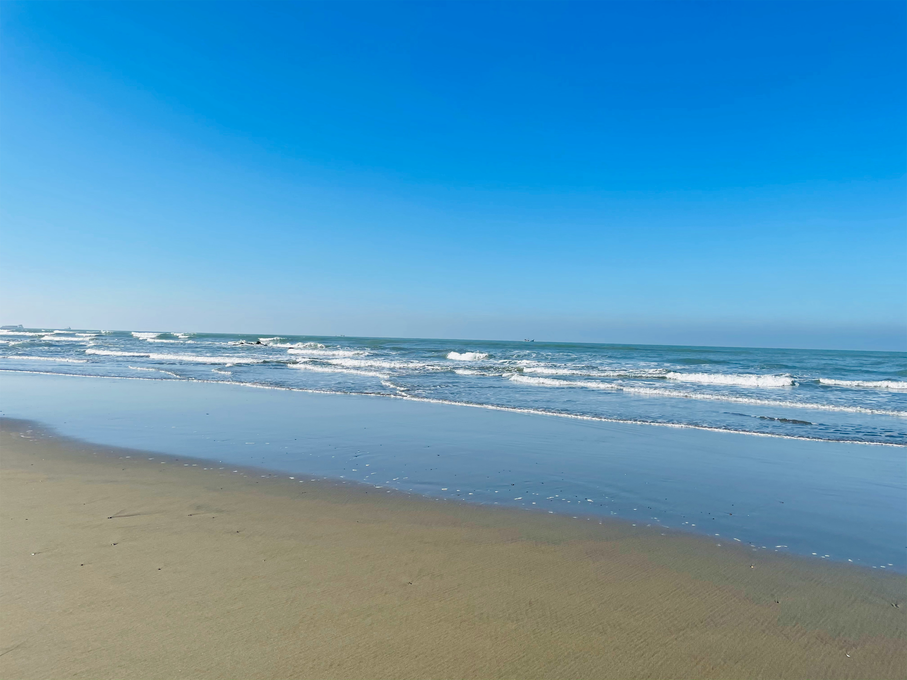
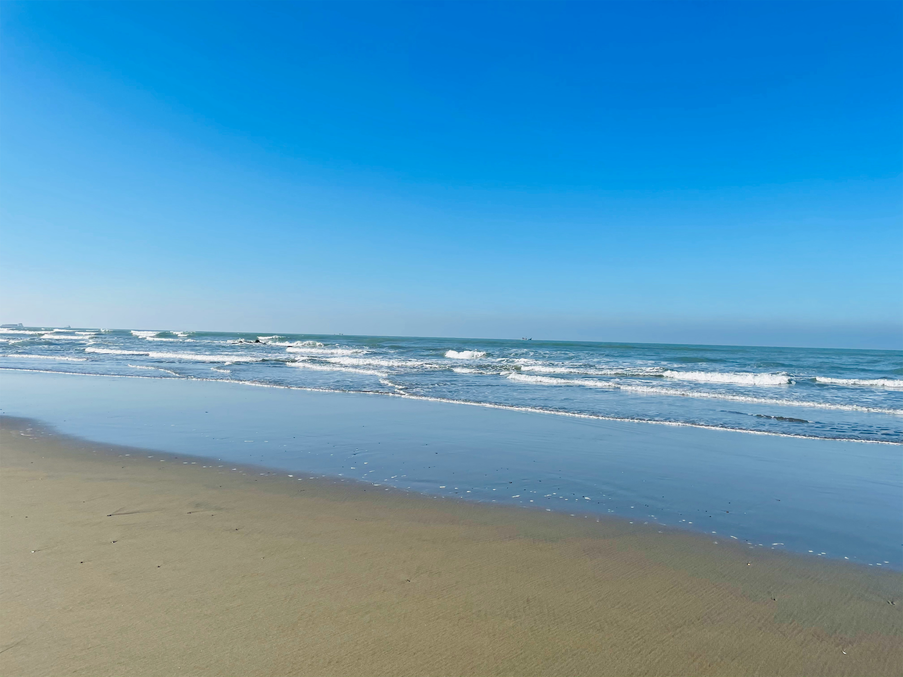

Why Visit Cox's Bazar?
Top Reasons
- World's longest uniterrupted beach
- Affordable hotels and resorts
- Fresh seafood everywhere
- Perfect for sunrise & sunset photography
- Lots of activities: surfung, swimming, beach biking
Top 3 Must-Visit Spots (Ordered List)
- Laboni Beach
- Marine Drive
- Inani Beach
Photo Gallery


 



Travel Video Guide
This video gives you an overview of Cox's Bazar, including the beach, Marine Drive, and nearby attractions. Watch it before planning your trip.